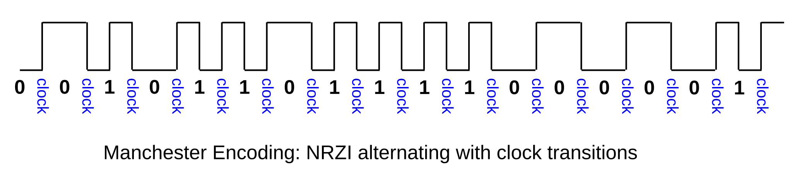
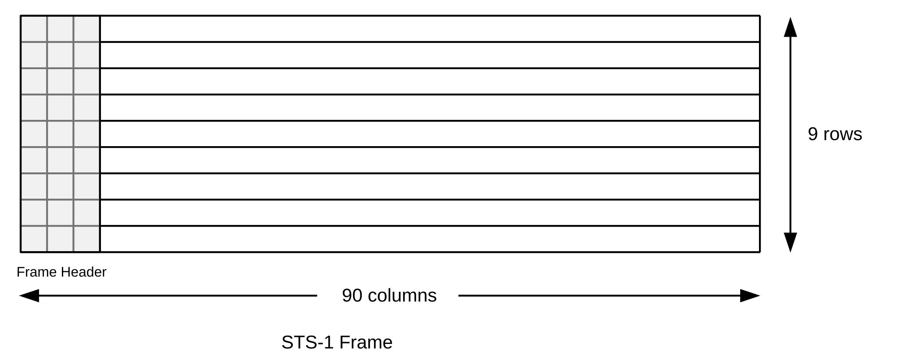
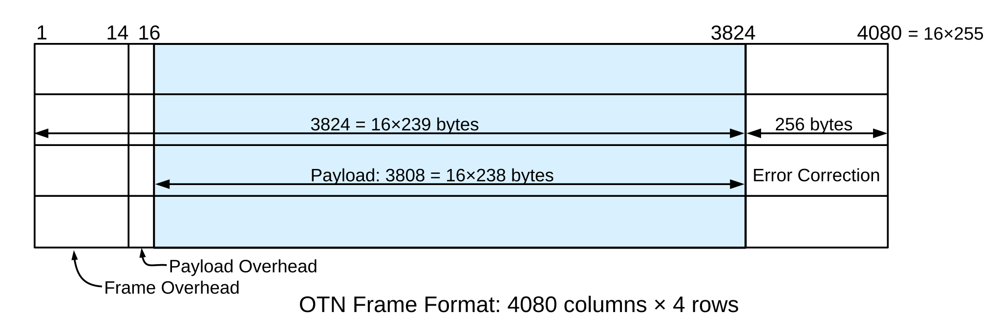

6 Links¶
At the lowest (logical) level, network links look like serial lines. In this chapter we address how packet structures are built on top of serial lines, via encoding and framing. Encoding determines how bits and bytes are represented on a serial line; framing allows the receiver to identify the beginnings and endings of packets.
We then conclude with the high-speed serial lines offered by the telecommunications industry, T-carrier and SONET, upon which almost all long-haul point-to-point links that tie the Internet together are based.
6.1 Encoding and Framing¶
A typical serial line is ultimately a stream of bits, not bytes. How do we identify byte boundaries? This is made slightly more complicated by the fact that, beneath the logical level of the serial line, we generally have to avoid transmitting long runs of identical bits, because the receiver may simply lose count; this is the clock synchronization problem (sometimes called the clock recovery problem). This means that, one way or another, we cannot always just send the desired bits sequentially; for example, extra bits are often inserted to break up long runs. Exactly how we do this is the encoding mechanism.
Once we have settled the transmission of bits, the next step is to determine how the receiver identifies the start of each new packet. Ethernet packets are separated by physical gaps, but for most other link mechanisms packets are sent end-to-end, with no breaks. How we tell when one packet stops and the next begins is the framing problem.
To summarize:
- encoding: correctly recognizing all the bits in a stream
- framing: correctly recognizing packet boundaries
These are related, though not the same.
For long (multi-kilometer) electrical serial lines, in addition to the clock-related serial-line requirements we also want the average voltage to be zero; that is, we want no DC component. We will mostly concern ourselves here, however, only with lines short enough for this not to be a major concern.
6.1.1 NRZ¶
NRZ (Non-Return to Zero) is perhaps the simplest encoding; it corresponds to direct bit-by-bit transmission of the 0’s and 1’s in the data. We have two signal levels, lo and hi, we set the signal to one or the other of these depending on whether the data bit is 0 or 1, as in the diagram below. Note that in the diagram the signal bits have been aligned with the start of the pulse representing that signal value.
NRZ replaces an earlier RZ (Return to Zero) encoding, in which hi and lo corresponded to +1 and -1, and between each pair of pulses corresponding to consecutive bits there was a brief return to the 0 level.
One drawback to NRZ is that we cannot distinguish between 0-bits and a signal that is simply idle. However, the more serious problem is the lack of synchronization: during long runs of 0’s or long runs of 1’s, the receiver can “lose count”, eg if the receiver’s clock is running a little fast or slow. The receiver’s clock can and does resynchronize whenever there is a transition from one level to the other. However, suppose bits are sent at one per µs, the sender sends five 1-bits in a row, and the receiver’s clock is running 10% fast. The signal sent is a 5-µs hi pulse, but when the pulse ends the receiver’s clock reads 5.5 µs due to the clock speedup. Should this represent five 1-bits or six 1-bits?
6.1.2 NRZI¶
An alternative that helps here (though not obviously at first) is NRZI, or NRZ Inverted. In this encoding, we represent a 0-bit as no change, and a 1-bit as a transition from lo to hi or hi to lo:
Now there is a signal transition aligned above every 1-bit; a 0-bit is represented by the lack of a transition. This solves the synchronization problem for runs of 1-bits, but does nothing to address runs of 0-bits. However, NRZI can be combined with techniques to minimize runs of 0-bits, such as 4B/5B (below).
6.1.3 Manchester¶
Manchester encoding sends the data stream using NRZI, with the addition of a clock transition between each pair of consecutive data bits. This means that the signaling rate is now double the data rate, eg 20 MHz for 10Mbps Ethernet (which does use Manchester encoding). The signaling is as if we doubled the bandwidth and inserted a 1-bit between each pair of consecutive data bits, removing this extra bit at the receiver:

All these transitions mean that the longest the clock has to “count” is 1 bit-time; clock synchronization is essentially solved, at the expense of the doubled signaling rate.
6.1.4 4B/5B¶
In 4B/5B encoding, for each 4-bit “nybble” of data we actually transmit a designated 5-bit symbol, or code, selected to have “enough” 1-bits. A symbol in this sense is a digital or analog transmission unit that decodes to a set of data bits; the data bits are not transmitted individually. (The transmission of symbols rather than individual bits is nearly universal for high-performance links, including all forms of Ethernet faster than 10Mbps and all Wi-Fi links.)
Specifically, every 5-bit symbol used by 4B/5B has at most one leading 0-bit and at most two trailing 0-bits. The 5-bit symbols corresponding to the data are then sent with NRZI, where runs of 1’s are safe. Note that the worst-case run of 0-bits has length three. Note also that the signaling rate here is 1.25 times the data rate. 4B/5B is used in 100-Mbps Ethernet, 2.2 100 Mbps (Fast) Ethernet. The mapping between 4-bit data values and 5-bit symbols is fixed by the 4B/5B standard:
| data | symbol | data | symbol |
|---|---|---|---|
| 0000 | 11110 | 1011 | 10111 |
| 0001 | 01001 | 1100 | 11010 |
| 0010 | 10100 | 1101 | 11011 |
| 0011 | 10101 | 1110 | 11100 |
| 0100 | 01010 | 1111 | 11101 |
| 0101 | 01011 | IDLE | 11111 |
| 0110 | 01110 | HALT | 00100 |
| 0111 | 01111 | START | 10001 |
| 1000 | 10010 | END | 01101 |
| 1001 | 10011 | RESET | 00111 |
| 1010 | 10110 | DEAD | 00000 |
There are more than sixteen possible symbols; this allows for some symbols to be used for signaling rather than data. IDLE, HALT, START, END and RESET are shown above, though there are others. These can be used to include control and status information without fear of confusion with the data. Some combinations of control symbols do lead to up to four 0-bits in sequence; HALT and RESET have two leading 0-bits.
10-Mbps and 100-Mbps Ethernet pads short packets up to the minimum packet size with 0-bytes, meaning that the next protocol layer has to be able to distinguish between padding and actual 0-byte data. Although 100-Mbps Ethernet uses 4B/5B encoding, it does not make use of special non-data symbols for packet padding. Gigabit Ethernet uses PAM-5 encoding (2.3 Gigabit Ethernet), and does use special non-data symbols (inserted by the hardware) to pad packets; there is thus no ambiguity at the receiving end as to where the data bytes ended.
The choice of 5-bit symbols for 4B/5B is in principle arbitrary; note however that for data from 0100 to 1101 we simply insert a 1 in the fourth position, and in the last two we insert a 0 in the fourth position. The first four symbols (those with the most zeroes) follow no obvious pattern, though.
6.1.5 Framing¶
How does a receiver tell when one packet stops and the next one begins, to keep them from running together? We have already seen the following techniques for addressing this framing problem: determining where packets end:
- Interpacket gaps (as in Ethernet)
- 4B/5B and special bit patterns
Putting a length field in the header would also work, in principle, but seems not to be widely used. One problem with this technique is that restoring order after desynchronization can be difficult.
There is considerable overlap of framing with encoding; for example, the existence of non-data bit patterns in 4B/5B is due to an attempt to solve the encoding problem; these special patterns can also be used as unambiguous frame delimiters.
6.1.5.1 HDLC¶
HDLC (High-level Data Link Control) is a general link-level packet format used for a number of applications, including Point-to-Point Protocol (PPP) (which in turn is used for PPPoE – PPP over Ethernet – which is how a great many Internet subscribers connect to their ISP), and Frame Relay, still used as the low-level protocol for delivering IP packets to many sites via telecommunications lines. HDLC supports the following two methods for frame separation:
- HDLC over asynchronous links: byte stuffing
- HDLC over synchronous links: bit stuffing
The basic encapsulation format for HDLC packets is to begin and end each frame with the byte 0x7E, or, in binary, 0111 1110. The problem is that this byte may occur in the data as well; we must make sure we don’t misinterpret such a data byte as the end of the frame.
Asynchronous serial lines are those with some sort of start/stop indication, typically between bytes; such lines tend to be slower. Over this kind of line, HDLC uses the byte 0x7D as an escape character. Any data bytes of 0x7D and 0x7E are escaped by preceding them with an additional 0x7D. (Actually, they are transmitted as 0x7D followed by (original_byte xor 0x20).) This strategy is fundamentally the same as that used by C-programming-language character strings: the string delimiter is “ and the escape character is \. Any occurrences of “ or \ within the string are escaped by preceding them with \.
Over synchronous serial lines (typically faster than asynchronous), HDLC generally uses bit stuffing. The underlying bit encoding involves, say, the reverse of NRZI, in which transitions denote 0-bits and lack of transitions denote 1-bits. This means that long runs of 1’s are now the problem and runs of 0’s are safe.
Whenever five consecutive 1-bits appear in the data, eg 011111, a 0-bit is then inserted, or “stuffed”, by the transmitting hardware (regardless of whether or not the next data bit is also a 1). The HDLC frame byte of 0x7E = 0111 1110 thus can never appear as encoded data, because it contains six 1-bits in a row. If we had 0x7E in the data, it would be transmitted as 0111 11010.
The HDLC receiver knows that
- six 1-bits in a row marks the end of the packet
- when five 1-bits in a row are seen, followed by a 0-bit, the 0-bit is removed
Example:
Data: 011110 0111110 01111110Sent as: 011110 01111100 011111010 (stuffed bits in bold)
Note that bit stuffing is used by HDLC to solve two unrelated problems: the synchronization problem where long runs of the same bit cause the receiver to lose count, and the framing problem, where the transmitted bit pattern 0111 1110 now represents a flag that can never be mistaken for a data byte.
6.1.5.2 B8ZS¶
While insertion of an occasional extra bit or byte is no problem for data delivery, it is anathema to voice engineers; extra bits upset the precise 64 kbps DS-0 rate. As a result, long telecom lines prefer encodings that, like 4B/5B, do not introduce timing fluctuations. Very long (electrical) lines also tend to require encodings that guarantee a long-term average voltage level of 0 (versus 0.5 if half the bits are 1 v and half are 0 v in NRZ); that is, the signal must have no DC component.
The AMI (Alternate Mark Inversion) technique eliminates the DC component by using three voltage levels, nominally +1, 0 and -1; this ternary encoding is also known as bipolar. Zero bits are encoded by the 0 voltage, while 1-bits take on alternating values of +1 and -1 volts. Thus, the bits 011101 might be encoded as 0,+1,-1,+1,0,-1, or, more compactly, 0+−+0−. Over a long run, the +1’s and the −1’s cancel out.
Plain AMI still has synchronization problems with long runs of 0-bits. The solution used on North American T1 lines (1.544 Mbps) is known as B8ZS, for bipolar with 8-zero substitution. The sender replaces any run of 8 zero bits with a special bit-pattern, either 000+−0−+ or 000−+0+−. To decide which, the sender checks to see if the previous 1-bit sent was +1 or −1; if the former, the first pattern is substituted, if the latter then the second pattern is substituted. Either way, this leads to two instances of violation of the rule that consecutive 1-bits have opposite sign. For example, if the previous bit were +, the receiver sees
This double-violation is the clue to the receiver that the special pattern is to be removed and replaced with the original eight 0-bits.
6.2 Time-Division Multiplexing¶
Classical circuit switching means a separate wire for each connection. This is still in common use for residential telephone connections: each subscriber has a dedicated wire to the Central Office. But a separate physical line for each connection is not a solution that scales well.
Once upon a time it was not uncommon to link computers with serial lines, rather than packet networks. This was most often done for file transfers, but telnet logins were also done this way. The problem with this approach is that the line had to be dedicated to one application (or one user) at a time.
Packet switching naturally implements multiplexing (sharing) on links; the demultiplexer is the destination address. Port numbers allow demultiplexing of multiple streams to same destination host.
There are other ways for multiple channels to share a single wire. One approach is frequency-division multiplexing, or putting each channel on a different carrier frequency. Analog cable television did this. Some fiber-optic protocols also do this, calling it wavelength-division multiplexing.
But perhaps the most pervasive alternative to packets is the voice telephone system’s time division multiplexing, or TDM, sometimes prefixed with the adjective synchronous. The idea is that we decide on a number of channels, N, and the length of a timeslice, T, and allow each sender to send over the channel for time T, with the senders taking turns in round-robin style. Each sender gets to send for time T at regular intervals of NT, thus receiving 1/N of the total bandwidth. The timeslices consume no bandwidth on headers or addresses, although sometimes there is a small amount of space dedicated to maintaining synchronization between the two endpoints. Here is a diagram of sending with N=8:
Note, however, that if a sender has nothing to send, its timeslice cannot be used by another sender. Because so much data traffic is bursty, involving considerable idle periods, TDM has traditionally been rejected for data networks.
6.2.1 T-Carrier Lines¶
TDM, however, works extremely well for voice networks. It continues to work when the timeslice T is small, when packet-based approaches fail because the header overhead becomes unacceptable. Consider for a moment the telecom Digital Signal hierarchy. A single digitized voice line in North America is one 8-bit sample every 1/8,000 second, or 64 kbps; this is known as a DS0 channel. A T1 line – the lowest level of the T-carrier hierarchy and known at the logical level as a DS1 line – represents 24 DS0 lines multiplexed via TDM, where each channel sends a single byte at a time. Thus, every 1/8,000 of a second a T1 line carries 24 bytes of user data, one byte per channel (plus one bit for framing), for a total of 193 bits. This gives a raw line speed of 1.544 Mbps.
Note that the per-channel frame size here is a single byte. There is no efficient way to send single-byte packets. The advantage to the single-byte approach is that it greatly reduces the latency across the line. The biggest source of delay in packet-based digital voice lines is the packet fill time at the sender’s end: the sender generates voice data at a rate of 8 bytes/ms, and a packet cannot be sent until it is full. For a 1 kB packet, that’s about a quarter second. For standard Voice-over-IP or VoIP channels, RTP is used with 160 bytes of data sent every 20 ms; for ATM, a 48-byte packet is sent every 6 ms. But the fill-time delay for a call sent over a T1 line is 0.125 ms, which is negligible (to be fair, 6 ms and even 20 ms turn out to be pretty negligible in terms of call quality). The T1 one-byte-at-a-time strategy also means that T1 multiplexers need to do essentially no buffering, which might have been important back in 1962 when T-carrier was introduced.
The next most common T-carrier / Digital Signal line is perhaps T3/DS3; this represents the TDM multiplexing of 28 DS1 signals. The problem is that some individual DS1s may run a little slow, so an elaborate pulse stuffing protocol has been developed. This allows extra bits to be inserted at specific points, if necessary, in such a way that the original component T1s can be exactly recovered even if there are clock irregularities. The pulse-stuffing solution did not scale well, and so T-carrier levels past T3 were very rarely used.
While T-carrier was originally intended as a way of bundling together multiple DS0 channels on a single high-speed line, it also allows providers to offer leased digital point-to-point links with data rates in almost any multiple of the DS0 rate.
6.2.2 SONET¶
SONET stands for Synchronous Optical NETwork; it is the telecommunications industry’s standard mechanism for very-high-speed TDM over optical fiber. While there is now flexibility regarding the the “optical” part, the “synchronous” part is taken quite seriously indeed, and SONET senders and receivers all use very precisely synchronized clocks (often atomic). The actual bit encoding is NRZI.
Due to the frame structure, below, the longest possible run of 0-bits is ~250 bits (~30 bytes), but is usually much less. Accurate reception of 250 0-bits requires a clock accurate to within (at a minimum) one part in 500, which is potentially within reach. However, SONET also has a “bit-scrambling” feature, involving XOR with a fixed bit pattern, to ensure in most cases that there is a 1-bit every byte or less.
The primary reason for SONET’s accurate clocking, however, is not the clock-synchronization problem as we have been using the term, but rather the problem of demultiplexing and remultiplexing multiple component bitstreams in a setting in which some of the streams may run slow. One of the primary design goals for SONET was to allow such multiplexing without the need for “pulse stuffing”, as is used in the Digital Signal hierarchy. SONET tributary streams are in effect not allowed to run slow (although SONET does provide for occasional very small byte slips, below). Furthermore, as multiple SONET streams are demultiplexed at a switching center and then remultiplexed into new SONET streams, synchronization means that none of the streams falls behind or gets ahead.
The basic SONET format is known as STS-1. Data is organized as a 9x90 byte grid. The first 3 bytes of each row (that is, the first three columns) form the frame header. Frames are not addressed; SONET is a point-to-point protocol and a node sends a continuous sequence of frames to each of its neighbors. When the frames reach their destination, in principle they need to be fully demultiplexed for the data to be forwarded on. In practice, there are some shortcuts to full demultiplexing.

The actual bytes sent are scrambled: the data is XORed with a standard, fixed pseudorandom pattern before transmission. This introduces many 1-bits, on which clock resynchronization can occur, with a high degree of probability.
There are two other special columns in a frame, each guaranteed to contain at least one 1-bit, so the maximum run of data bytes is limited to ~30; this is thus the longest run of possible 0’s.
The first two bytes of each frame are 0xF628. SONET’s frame-synchronization check is based on verifying these byte values at the start of each frame. If the receiver is ever desynchronized, it begins a frame re-synchronization procedure: the receiver searches for those 0xF628 bytes at regular 810-byte (6480-bit) spacing. After a few frames with 0xF628 in the right place, the receiver is “very sure” it is looking at the synchronization bytes and not at a data-byte position. Note that there is no evident byte boundary to a SONET frame, so the receiver must check for 0xF628 beginning at every bit position.
SONET frames are transmitted at a rate of 8,000 frames/second. This is the canonical byte sampling rate for standard voice-grade (“DS0”, or 64 kbps) lines. Indeed, the classic application of SONET is to transmit multiple DS0 voice calls using TDM: within a frame, each data byte position is given over to one voice channel. The same byte position in consecutive frames constitutes one byte every 1/8000 seconds. The basic STS-1 data rate of 51.84 Mbps is exactly 810 bytes/frame × 8 bits/byte × 8000 frames/sec.
To a customer who has leased a SONET-based channel to transmit data, a SONET link looks like a very fast bitstream. There are several standard ways of encoding data packets over SONET. One is to encapsulate the data as ATM cells, and then embed the cells contiguously in the bitstream. Another is to send IP packets encoded in the bitstream using HDLC-like bit stuffing, which means that the SONET bytes and the IP bytes may no longer correspond. The advantage of HDLC encoding is that it makes SONET re-synchronization vanishingly infrequent. Most IP backbone traffic today travels over SONET links.
Within the 9×90-byte STS-1 frame, the payload envelope is the 9×87 region nominally following the three header columns; this payload region has its own three reserved columns meaning that there are 84 columns (9×84 bytes) available for data. This 9×87-byte payload envelope can “float” within the physical 9×90-byte frame; that is, if the input frames are running slow then the output physical frames can be transmitted at the correct rate by letting the payload frames slip “backwards”, one byte at a time. Similarly, if the input frames are arriving slightly too fast, they can slip “forwards” by up to one byte at a time; the extra byte is stored in a reserved location in the three header columns of the 9×90 physical frame.
Faster SONET streams are made by multiplexing slower ones. The next step up is STS-3, an STS-3 frame is three STS-1 frames, for 9×270 bytes. STS-3 (or, more properly, the physical layer for STS-3) is also called OC-3, for Optical Carrier. Beyond STS-3, faster lines are multiplexed combinations of four of the next-slowest lines. Here are some of the higher levels:
| STS | STM | line rate |
|---|---|---|
| STS-1 | STM-0 | 51.84 Mbps |
| STS-3 | STM-1 | 155.52 Mbps |
| STS-12 | STM-4 | 622.08 Mbps (=12*51.84, exactly) |
| STS-48 | STM-16 | 2.48832 Gbps |
| STS-192 | STM-64 | 9.953 Gbps |
| STS-768 | STM-256 | 39.8 Gbps |
Usable capacity is typically 84/90 of the above line rates, as six of the 90 columns of an STS-1 frame are for overhead.
SONET provides a wide variety of leasing options at various bandwidths. High-volume customers can lease an entire STS-1 or larger unit. Alternatively, the 84 data columns of an STS-1 frame can be divided into seven virtual tributary groups, each of twelve columns; these groups can be leased individually or in multiples, or be further divided into as few as three columns (which works out to be just over the T1 data rate).
6.2.3 Optical Transport Network¶
The Optical Transport Network, or OTN, is an ITU specification for data transmission over optical fiber; the primary standard is G.709. A preliminary version of G.709 was published in 1988, but version 1.0 was released in 2001. OTN abandons SONET’s voice-oriented frame rate of 8000 frames/sec; while OTN is still widely used for voice, transmission no longer quite so perfectly fits the time-division-multiplexing model.
The standard OTN frame is as diagrammed below; each frame is arranged in four rows. It can be helpful to view the 4,080 columns as divided into 255 16-byte-wide “supercolumns”: one for the frame and payload overhead, 238 for the payload itself, and 16 for error correction.

The portion available for carrying customer data is highlighted in blue; unlike SONET, the payload portion of a frame is not allowed to “float”. The 256 columns at the end are for error-correcting codes (7.4.2 Error-Correcting Codes); the addition of such error correction (below) is a major advantage of OTN over SONET.
OTN comes in three primary rates, OTN1, OTN2 and OTN3; there are also a few variants. The OTN1 rate is chosen so that a SONET STS-48/STM-16 stream – 2.48832 Gbps – exactly fits in the blue payload portion of the frame. This means that the OTN1 line rate must be (255/238) × 2.48832 ≃ 2.6661 Gbps. The frame rate, in turn, is therefore about 20.42 frames/ms.
Four OTN1 streams can be multiplexed into a single OTN2 stream; four OTN2 streams can be multiplexed into a single OTN3 stream. The frame layout does not change, however; it is the frame rate that increases. The data rate does not increase by an exact multiple of 4; the OTN2 rate is chosen so that four OTN1 payloads and an additional 16 columns per frame can be carried in the payload portion of the OTN2 frames. The additional 16 columns serve to specify details about the interleaving of the four OTN1 frames; this leaves 3792 = 16×237 columns for the OTN1-stream data. The end result is that the OTN2 stream must carry data at a line rate of 4×238/237 times the OTN1 rate, or 4×255/237 times the STS-48/STM-16 rate. This works out to be about 10.709 Gbps.
In order to handle multiplexing without the need for T-carrier-style pulse stuffing, OTN streams must have a long-term bit-rate accuracy of ±20 parts per million, which works out to be one byte every 3-4 frames. The frame-overhead region takes care of the slack.
The last 256 columns of each frame are devoted to error correction; SONET has nothing comparable. By default, these columns are used for so-called Reed-Solomon codes; specifically, in a formulation where 16 bytes of codes are used for each 239 bytes of payload (this is exactly consistent with the relative sizes of the payload and error-correction columns). Such codes can correct up to 8 bytes of error. They can be used to increase the length of cable runs before regeneration is needed. Alternatively, their use can reduce the bit error rate as much as a hundredfold, which will be important in 21.6 The High-Bandwidth TCP Problem.
OTN also includes, at the physical layer, extensive support for dense wavelength-division multiplexing (DWDM, a form of frequency-division multiplexing), meaning that multiple independent OTN streams can be carried on relatively close wavelengths. This greatly increases the overall capacity of a given run of fiber. DWDM works at a lower network layer than the frame organization outlined above, and in principle SONET could implement DWDM as well. In practice, though, DWDM has been integrated with OTN from the beginning.
6.2.4 Other Optical Fiber¶
SONET and OTN are primarily, though not exclusively, used by telecommunications carriers. There are also multiple fiber-optic alternatives for smaller-scale operations. These are often part of the Ethernet family although they may have little except their bitrate in common with one another or with Ethernet over copper wire. Another standard that supports optical fiber links is so-called “Fibre Channel”, though that too also now supports copper.
Distances supported by fiber-optic Ethernet range from hundreds of meters to tens of kilometers. Generally, the longer-haul links require the use of full duplex to avoid the collision-detection (slot time) requirement that a sender continue to transmit for one full Ethernet-segment RTT, but full duplex is common at high Ethernet speeds even for short links. For 100 Mbps Ethernet, fiber-optic standards include 100BASE-FX, 100BASE-SX, 100BASE-LX and 100BASE-BX. The latter supports distances up to 40 km; the limiting factor is the need for signal regeneration. 1000-Gbit Ethernet optical standards include 1000BASE-SX, 1000BASE-LX, 1000BASE-BX and 1000BASE-EX; the latter again supports up to 40 km. These forms of Ethernet are often deployed in residential “fiber Internet” connections, although in some cases the last hundred meters or so may still involve copper.
At speeds of 10 Gbps, long-range optical fiber alternatives include 10GBASE-ER and 10GBASE-ZR, supporting 40 and 80 km respectively; 10GBASE-ZR is based on SONET STM-64 standards. It is worth noting that fiber is often used for short links as well at 1 Gbps and 10 Gbps speeds; at 10 Gbps some copper-link standards support distances of only a few meters. As of 2014, several 10-Gbps Ethernet physical-layer standards come from industry consortiums rather than the IEEE.
6.3 Epilog¶
This completes our discussion of common physical links. Perhaps the main takeaway point is that transmitting bits over any distance is not quite as simple as it may appear; simple NRZ transmission is not effective.
6.4 Exercises¶
Exercises may be given fractional (floating point) numbers, to allow for interpolation of future exercises. Exercises marked with a ♢ have solutions or hints at 34.6 Solutions for Links.
1.0. What is encoded by the following NRZI signal? The first two bits are shown.
┌───┐ ┌───────────────────┐ ┌───┐ ┌───────┐ ┌───────
│ │ │ │ │ │ │ │ │
───┘ └───┘ └───────┘ └───┘ └───┘
0 1
2.0. Argue that sending 4 0-bits via NRZI requires a clock accurate to within 1 part in 8. Assume that the receiver resynchronizes its clock whenever a 1-bit transition is received, but that otherwise it attempts to sample a bit in the middle of the bit’s timeslot.
3.0.(a) What bits are encoded by the following Manchester-encoded sequence?
┌─┐ ┌─┐ ┌─┐ ┌───┐ ┌─┐ ┌───┐ ┌─┐ ┌───┐ ┌─┐ ┌───┐ ┌───┐ ┌───┐
│ │ │ │ │ │ │ │ │ │ │ │ │ │ │ │ │ │ │ │ │ │ │ │
─┘ └─┘ └─┘ └─┘ └─┘ └───┘ └───┘ └─┘ └─┘ └───┘ └───┘ └───┘ └─
4.0.♢ What is the 4B/5B encoding for the 3-byte string “Net”? (Hint: ‘N’ is 0100 1110.)
5.0. What three ASCII letters (bytes) are encoded by the following 4B/5B pattern? (Be careful about upper-case vs lower-case.)
010110101001110101010111111110
6.0.(a) Suppose a device is forwarding SONET STS-1 frames. How much clock drift, as a percentage, on the incoming line would mean that the output payload envelopes must slip backwards by one byte per three physical frames? | (b). In 6.2.2 SONET it was claimed that sending 250 0-bits required a clock accurate to within 1 part in 500. Describe how a SONET clock might meet the requirement of part (a) above, and yet fail at this second requirement. (Hint: in part (a) the requirement is a long-term average).